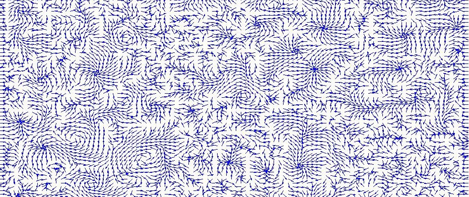
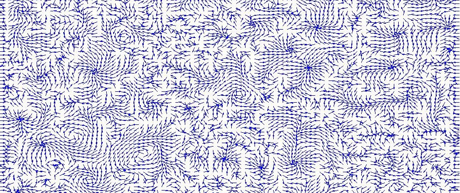
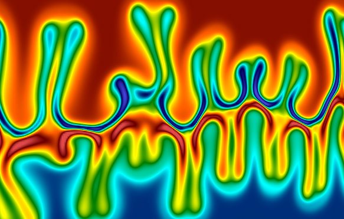
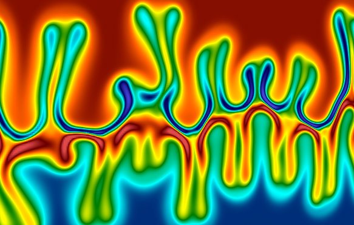

I work as an Assistant Professor of Physics. I had worked at IISc Bangalore
as a DST-INSPIRE faculty. Way before that, I worked at Courant Institute (NYU) with
Prof. Aleks Donev and as a postdoc at Institute of Materials (Köln) with Prof. Thomas Voigtmann and Prof. Jürgen Horbach. In between at Uni-Konstanz, I
collaborated with Prof. Matthias Fuchs. I obtained Ph.D. in Soft Condensed Matter Theory from The Institute of Mathematical
Sciences, Chennai after working with Prof. Gautam Menon and Prof. Ronojoy
Adhikari.
Apart from UG teaching, I work on various (a) field theoretic problems and (b) particulate computational problems arising in soft materials at equilibrium and non-equilibrium scenario, scattered mostly in studying of fluctuation effects as well as response to external perturbation of isotropic and anisotropic materials.
News:
- My work on nucleation in anisotropic liquids is highlighted in a Review Article and Featured in Science Letter (2017).
- IIT-B Engineering Physics student A. Shetty did his Summer Research under my supervision at IISc Bangalore (2016).
- Our work on fluctuating hydrodynamics for multicomponent liquids is selected for Francois-Naftali-Frenkiel Award by Physics of Fluids and featured in Phys.org mentioning, "Mathematicians model fluids at mesoscale" (2015).
- I'm awarded a DST-INSPIRE faculty at IISc Bangalore & Asutosh College (2015-2020).
- Our work on Bauschinger effect in dense supercooled melts appeared in Special Topics on Glass Transition (2013).
- M.Sc. student M. Evers did his Ausarbeitung under my supervision at University of Konstanz (2012).
 

 
